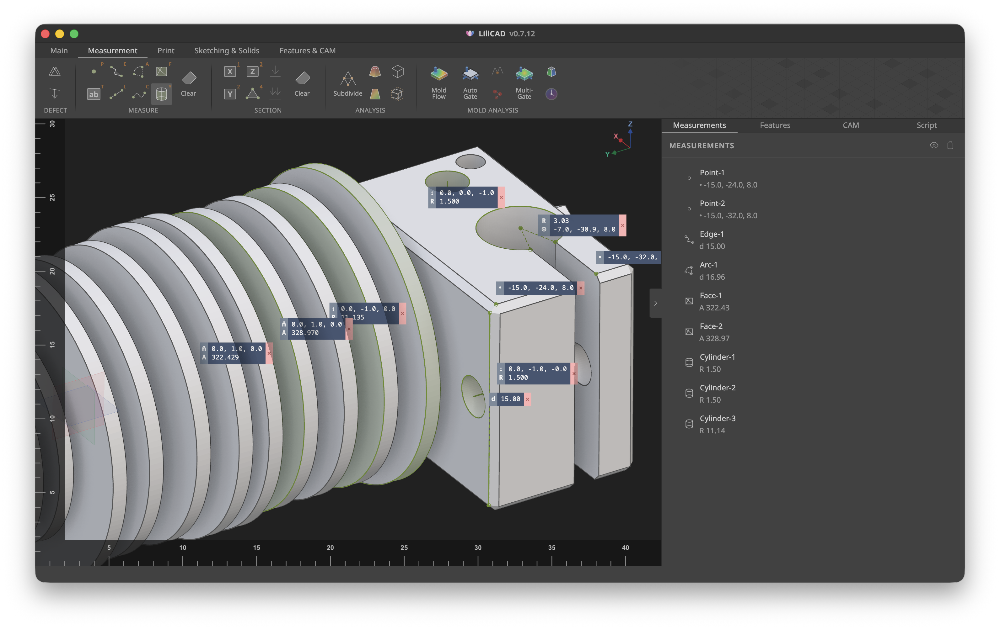
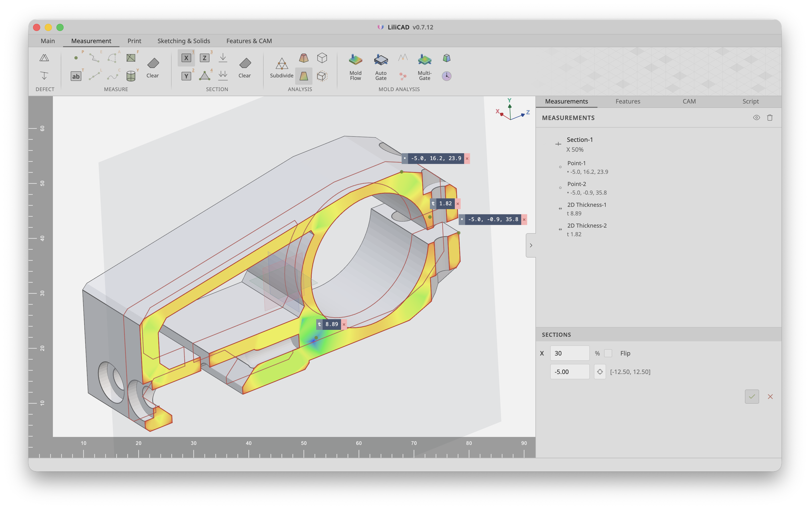
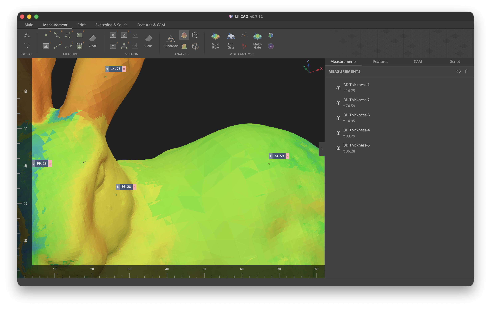
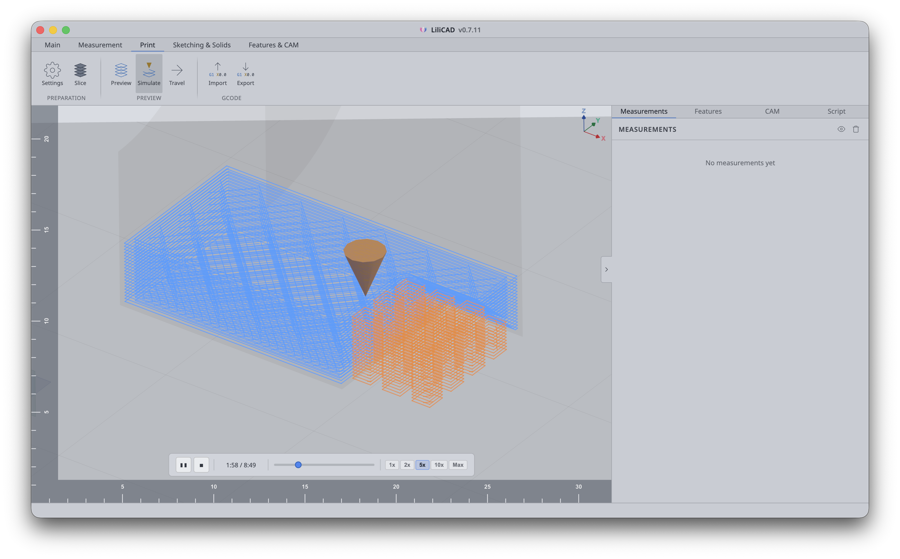
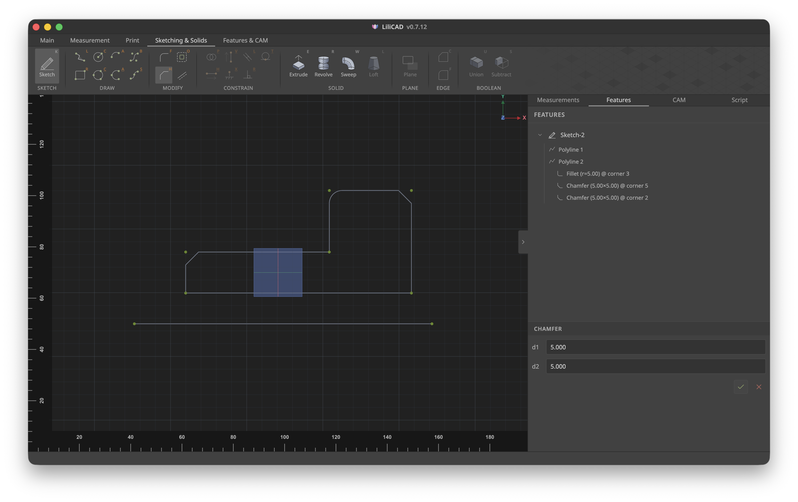
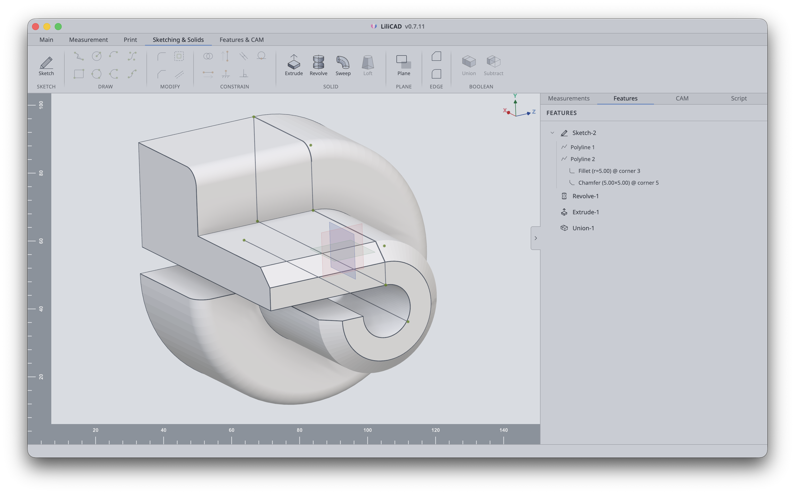
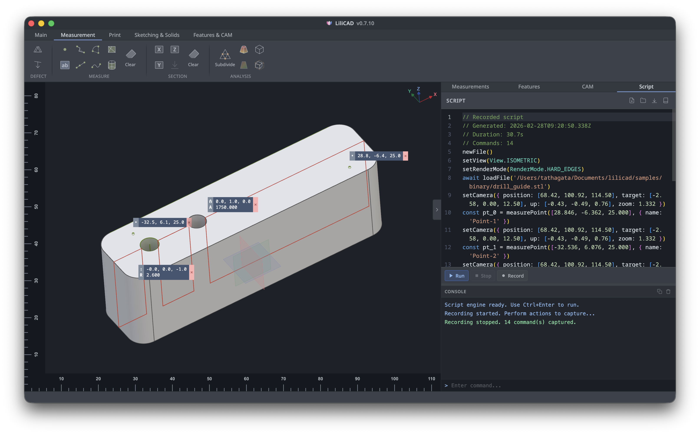

LiliCAD
From inspection to manufacturing — precision measurement, constrained 2D sketching, parametric 3D modeling, mesh analysis, and a complete 3D printing pipeline in a focused, modern interface.
DownloadCross-platform, lightweight & modern
LiliCAD is a cross-platform desktop CAD application with a modern interface tuned for clarity. Measure with precision using smart geometry detection for points, edges, radii, cylinders, and planar faces with vertex snapping. Section models along standard axes and compute 3D/2D thickness with color-coded heatmaps. Sketch 2D profiles with lines, arcs, circles, splines, and Bézier curves under geometric constraints, then build parametric solids using extrude, revolve, sweep, and loft operations. Refine edges with fillet and chamfer, combine shapes with boolean operations powered by the Manifold 3D engine, and take models from design to print with integrated slicing, G-code generation, and print simulation.

Measurement & Markup Tools
Point, edge, radius, cylinder, and planar-face tools with smart geometry detection snap to vertices for precise measurements, while anchored text markups capture quick context anywhere on the mesh.

Sectioning & Mesh Analysis
Adjust axis-aligned section planes with a slider, remesh the cap into a uniform thickness heatmap, and pin measurements or outlines so callouts stay put as you switch views. Run defect analysis and tessellation checks to evaluate mesh quality.

Thickness & DFM Analysis
Reverse normals map global wall thickness as a color heatmap with live readouts and pins for critical areas. Run mold-flow, draft-angle, and undercut analyses to catch manufacturing issues early.

3D Printing Pipeline
Slice models with configurable layer height and infill patterns, generate G-code with support structures, brim, and skirt, then preview each layer or simulate the full print. Import existing G-code, check printability, repair meshes, and manage printer profiles — a complete additive-manufacturing pipeline.

Constrained 2D Sketching
Draw lines, arcs, circles, polylines, splines, and Bézier curves with snap assistance on XY/YZ/ZX planes. Apply geometric constraints — horizontal, vertical, coincident, tangent, perpendicular, and more — to fully define your sketches for parametric modeling.

Parametric Solid Modeling
Extrude, revolve, sweep, and loft sketches into solids, refine edges with fillet and chamfer, then combine shapes with manifold-powered boolean operations.

Scripting & Automation
Record UI actions into scripts, edit them in an integrated Monaco editor with a high-level DSL, and replay to automate repetitive modeling and analysis workflows.